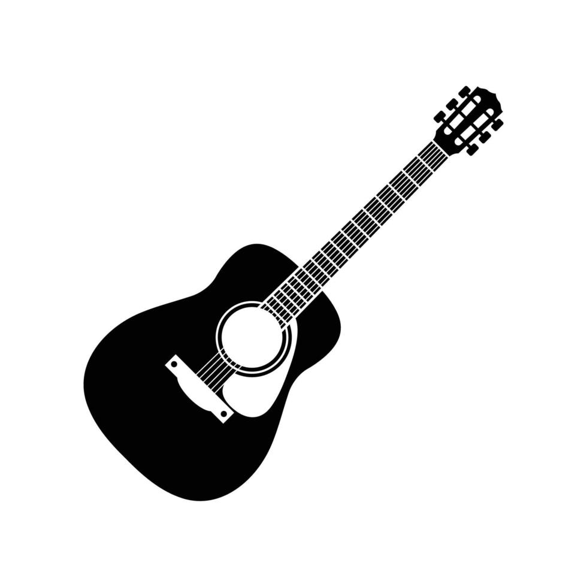

Band Builder
About Us
Welcome to Band Builder! This is a website that allows users to search locally for other musicians to form a band. Users can create a profile and search for other users based on their location, instrument, and genre. This website is designed to help musicians connect with each other and create new music together.
Our Mission
Our mission is to provide a platform for musicians to connect and collaborate with each other. We believe that music is a universal language that brings people together, and we want to make it easier for musicians to find each other and create new music. Whether you're a beginner or a professional musician, Band Builder is the perfect place to find like-minded individuals who share your passion for music.
Get Started Now!